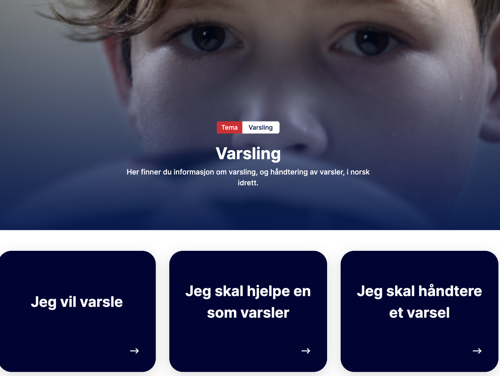

Innlegg
Mitt varsel

Ringerike Taekwondo klubb ønsker at vår klubb skal være et godt og sikkert sted å være for alle.
Vi har nå fått på plass idrettens varslingsportal og den finner du øverst til venstre på vår hjemmeside. Her finner du også informasjon om hva dette er og hvordan eventuelt varsle. I Ringerike TKD klubb vil varlet først bli lest av styreleder Geir Karlsen. Artsiom Stalmakov er også saksbehandler i systemet og sammen beslutter de videre tiltak rundt varsler.
https://arkiv.ringeriketkd.no/hvordan-varsle-om-kritikkverdige-forhold/